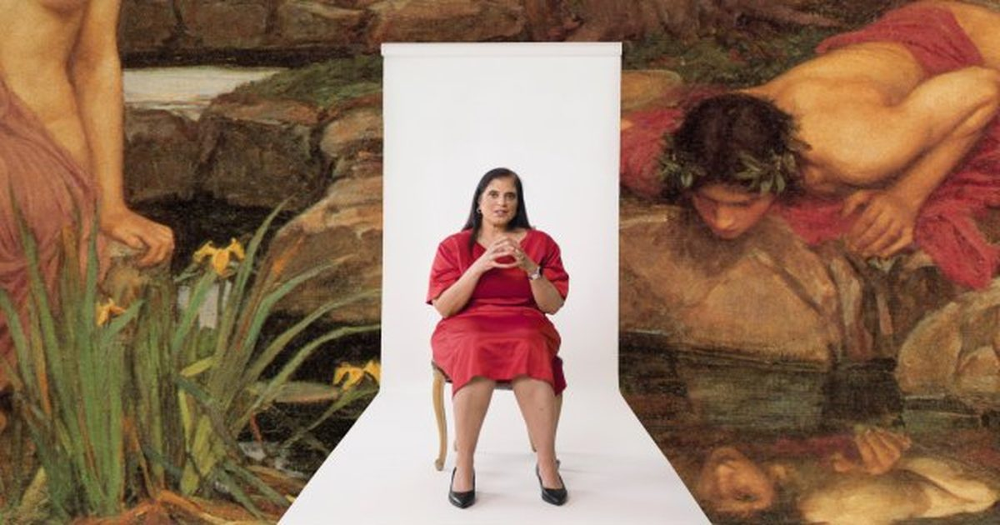

Клинический психолог: 5 видов нарциссизма и как их выявить
Нарциссические люди часто очаровательны на званом обеде и жестоки по дороге домой, что говорит о том, что они могут контролировать ситуацию.
Клинический психолог Рамани Дурвасула, автор книги «Это не ты», изучала нарциссизм задолго до того, как он стал модным словом, и она утверждает, что большая часть того, что распространяется в Интернете, неправильно.
Это видео Клинический психолог: 5 типов нарциссизма и как их выявить представлено в Big Think.